Bash Navigation Software
Six marine tools you open in a browser and use at sea: celestial navigation, the rules of the road, tides, the boat’s log, the weather, and a study machine that ships empty. They install to a home screen, cache themselves, and keep working with the aircraft mode on. No account, no server, and nothing leaves the device. Underneath, every one is generated from and checked against a POSIX sh and awk implementation of the same thing — which is why the two agree.
# three star sights, taken at morning twilight
celnav sight "2026-08-29 07:30:00" Dubhe C "19 32.1"
celnav sight "2026-08-29 07:34:00" Bellatrix C "49 37.2"
celnav sight "2026-08-29 07:38:00" Markab C "29 01.3"
celnav fix
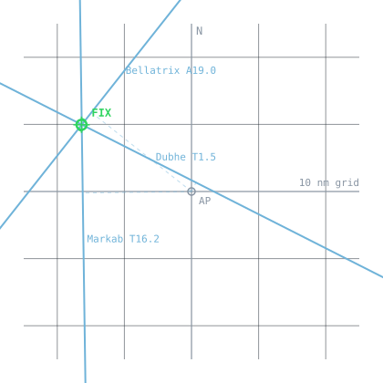
INTERCEPT PLOT (AP at centre, N up)
| N : //
| : //
| : //
- | : //
---- | : //
---- | : //
---- | ://
---- | ///
---- | //:
---- | // :
---- | // :
-@b-. :
W /| ----: E
..........................//..c.....+a--.................................
// | : ----
// | : -----
// | : -----
// | : -----
// | : -----
// | : -----
// | : -----
// | : -----
// | : --
// | :
// | :
// | :
/// | S : 5 nm per row
AP = + LOP = lettered line fix = @ 1 row = 5 nm, 1 column = 2.5 nmA computed almanac, sight reduction with the full working shown, the fix, the running fix — and a training mode that teaches the whole subject from first principles.
The international rules of the road: lights and shapes drawn from any angle, encounter scenarios, sound signals, and fifteen lessons on the rules themselves.
Harmonic prediction for 8,334 stations worldwide, each in its own standard time. The table and the curve, with the turns marked.
The boat’s records in one book: the deck log, engine, provisions and spares. Append-only, UTC, corrections as new entries — because a log has standing after an incident.
Reads your own observations and reasons about what is coming, showing its working. It cannot forecast without a network; it can make you your own forecaster.
The launcher: one command in front of the other five, for when you are cold and the screen is wet and five names is four too many.
Open them on a phone, an iPad, or a laptop
Each is its own page with its own manifest and service worker, so each installs as a separate home-screen icon and caches itself on first load. Each one tells you on its own screen whether it is cached yet, rather than leaving you to guess.
They are not ports in the loose sense. Every lesson file and every data table is produced by running the awk engine’s own functions and capturing what they print rather than transcribed, and the test suite regenerates all of them on every run and compares them with what is committed — so a change to the shell that has not reached the browser fails at the desk rather than at sea. The shared arithmetic is held to the same standard: 21,264 comparisons for the rules of the road and 4,099 for contact management, against every awk on the machine.
The celestial engine was additionally diffed against the awk over 20,568 reference values when it was ported, and reproduces the shell tool’s own self-test against an independent reference ephemeris to 0.151′. The self-test runs on every suite run; that 20,568-row comparison was a one-off and its harness is not yet in the repository, which is a gap and is recorded as one.
To install one: in Safari, Share then Add to Home Screen; on a Mac, Add to Dock. Prove it once at the dock rather than at sea: open every screen, turn the network off, relaunch from the icon.
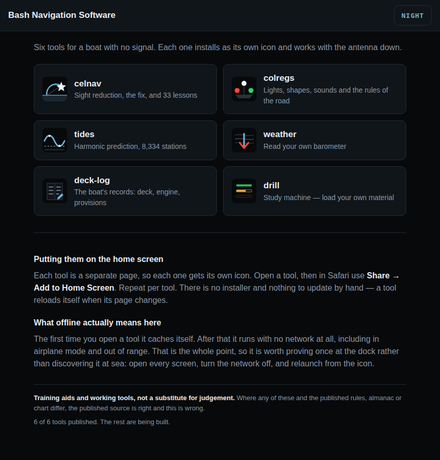
Design
Three constraints shaped both tools, and each one has a consequence worth knowing.
Tool two
The lights are not drawings. Each one is described by its position on the vessel, its height, and its arc of visibility, and the program works out what you can see from where you are standing. Shoot her from astern and the masthead lights correctly disappear.
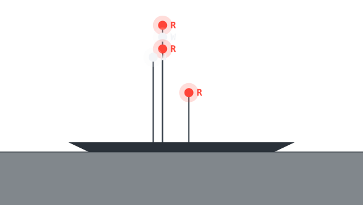
WHAT DO YOU SEE?
----------------------------------------------------------------------
masthead height
R
W
:
R
:W
::
::
::
G ::
: ::
: ::
: ::
deck : ::
=================================
~~~~~~~~~~~~~~~~~~~~~~~~~~~~~~~~~~~~~~~~~~~~~~~~~~~~~~~~~~~~~~~~~~~
----------------------------------------------------------------------
You are broad on her starboard bow.
Letters are the colours: W white R red G green Y yellow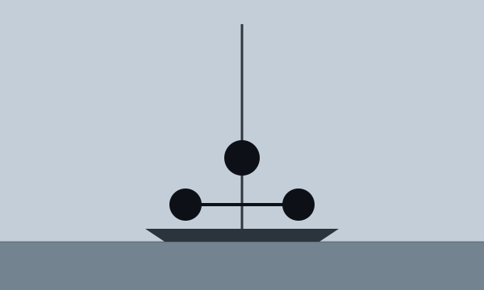
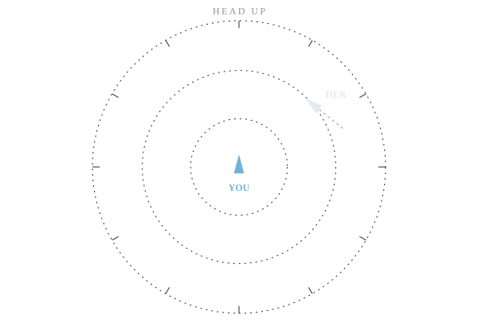
WHAT DO YOU DO?
----------------------------------------------------------------------
HEAD UP
.................
....... .......
.... ....
... ...
.. ..
... ...
.. ................. ..
.. ... ... ..
. ... ... HER .
.. .. .. \ ..
. . ^ . : .
. . | .. :: .
. . YOU . : .
.. .. .. ..
. ... ... .
.. ... ... ..
.. ................. ..
... . ...
.. ..
... ...
.... ....
....... .......
.................
----------------------------------------------------------------------
You are a power-driven vessel under way.
You see a power-driven vessel showing her red sidelight, on your starboard beam, heading as drawn.
----------------------------------------------------------------------
a) Stand on: she must keep clear of you.
b) Give way: alter to starboard and pass under her stern.
c) Give way: alter to port to cut across ahead of her.
d) Slow down and let her decide.The snapshot asks who gives way. This asks the harder question: is there a risk at all, how close will she come, and does your action actually open the distance? Three observations six minutes apart, with the scatter a hand bearing compass really gives you.
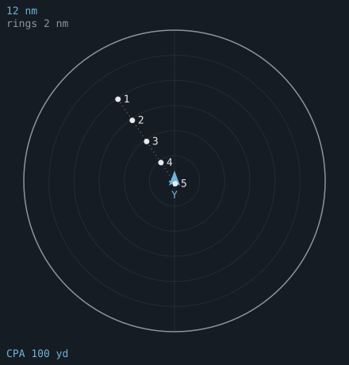
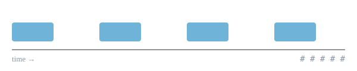
Tool three
Not a downloaded table that expires. The harmonic constants are aboard, and the prediction is computed from them for any date, past or future, with no network.
new lon finds New London — because nobody remembers a station’s full official name at 0400.No tidal current data. NOAA has 4,430 current stations but United States waters only, and worldwide coverage is the point of the thing — so it is left out rather than offered for a quarter of the planet.
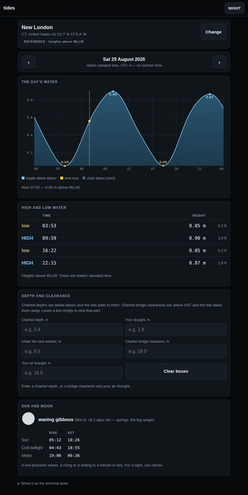
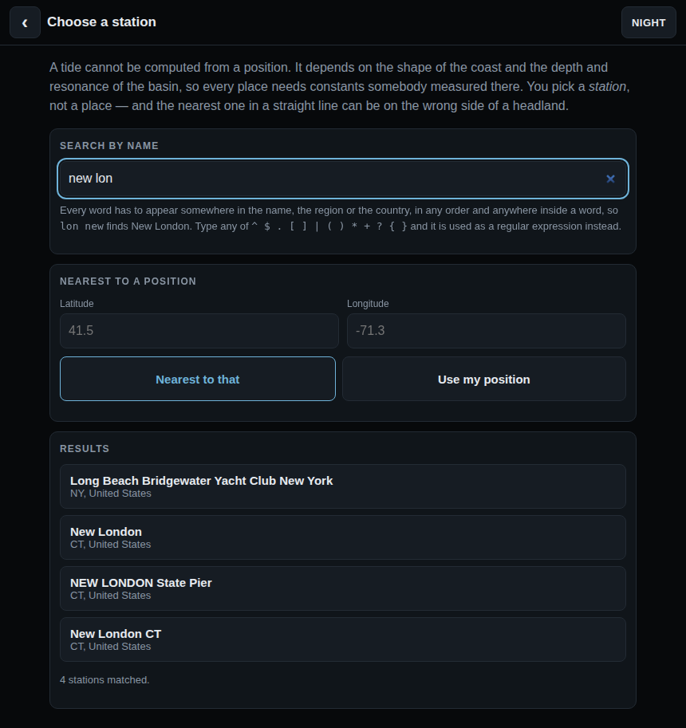
Tool four
The deck log, the engine, provisions and spares, in one book kept by one person at one moment. A watch stander says the report once; nobody says it three times at 0400.
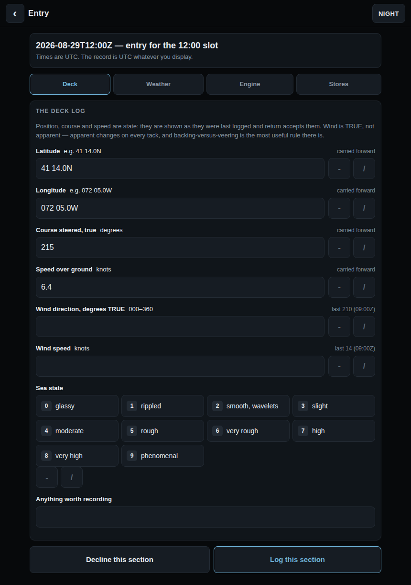
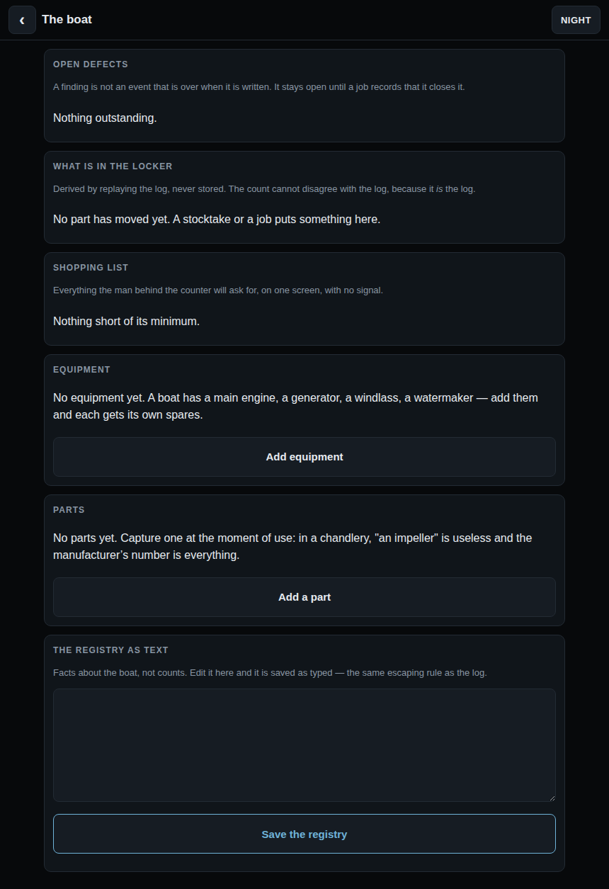
Tool five
With no network it cannot forecast. No GRIBs, no synoptic charts, no models. What it does is make you your own forecaster from the barometer, the sky and the wind — and it says so in its own about rather than implying otherwise.
Celestial is what you do when GPS dies. This is what you do when the sat comms die.
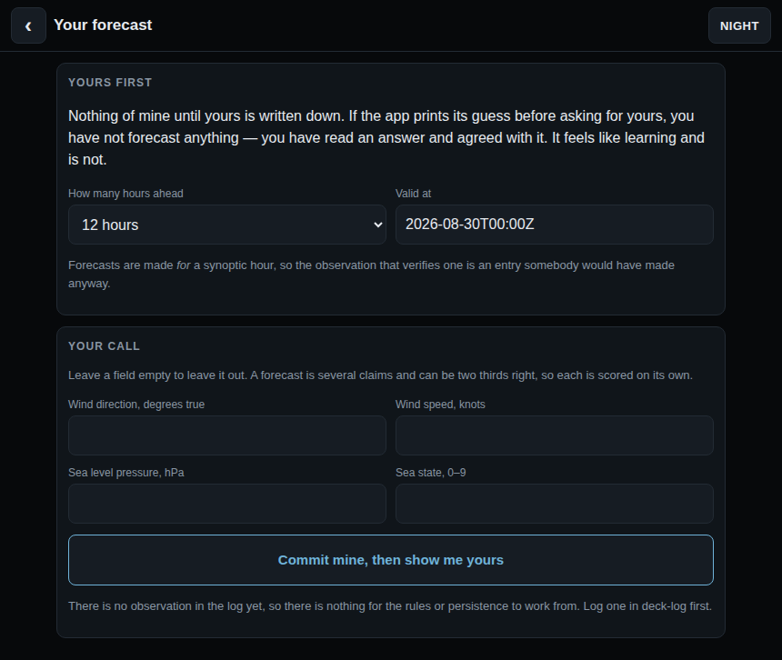
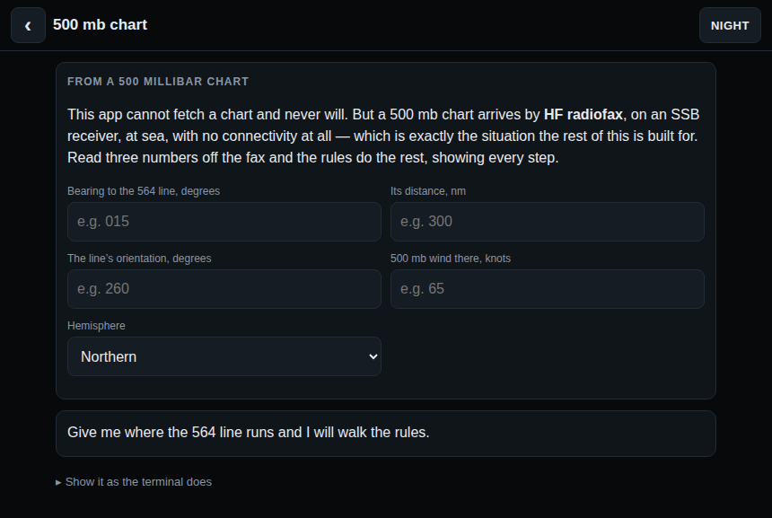
Tool six
Sections, recall practice, and a graded test that opens the next section when you pass it. What it does not have is any material: you load a content pack from your own device, it is read by the page, and it is kept in that browser’s own storage.
docs/web/drill/README.md.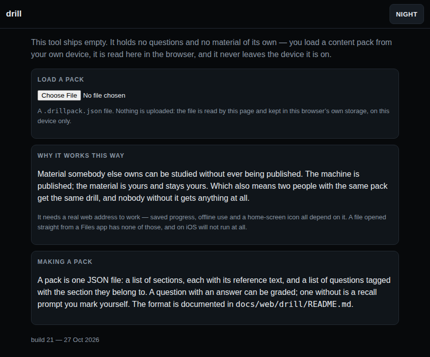
Detail
Three modes, remembered between sessions: day, night, plain.
Night mode is deep red on black, with highlights in a brighter red, and contains no green at all. Rebuilding dark adaptation takes about twenty minutes, and a bright screen at 0300 costs you every one of them. Whatever colour marks the assumed position and the fix on the plot marks the matching symbol in the key underneath, so the legend reads as a colour match rather than a list.
Plain mode emits no escape sequences, and is selected automatically whenever output is not a terminal — so a redirected fix is always clean text.
celnav night colregs night
Getting it
Copy the file, make it executable, run it. That is the whole procedure.
git clone https://github.com/larrys614/bashnav.git
cd bashnav
./bin/celnav doctor # checks your awk, your clock, the data folder
./bin/colregs about
On macOS, Linux and the BSDs there is nothing to install — the system awk already has what the tools need.
Nothing to install. Open a tool above in Safari and add it to the home screen — no shell, no awk, no package manager, no gawk. That is the route this page leads with and the one to use.
The shell build does still run on an iPad, under a-Shell or iSH, which is worth knowing if you would rather have the tools at a prompt than as apps. a-Shell already carries an awk with the maths library. Under iSH only, the BusyBox awk is sometimes built without it, and apk add gawk inside iSH supplies one — apk is Alpine's package manager and exists nowhere else. celnav doctor says which you have and names the fix. iOS gives an app only its own sandbox to write in, so the tools keep their data under ~/Documents, the one place a-Shell can create files.
celnav manual (PDF, 11 pages) · quick reference card (PDF) · source on GitHub
Cautionary note
These are training and cross-checking tools, not certified navigation equipment.
The accuracy figures above describe the arithmetic, not your fix. A fix is only as good as the sight, the horizon and above all the time — four seconds of clock error is one nautical mile of longitude. Carry the tables, and know how to use them.
colregs is a training aid. It is not the rules and carries no authority. The COLREGs as published by the IMO are what govern at sea; where this program and the Convention differ, the Convention is right and the program is wrong. Nothing here relieves any vessel, owner, master or crew of the consequences of neglecting to comply with the rules, of neglecting a proper look-out, or of neglecting any precaution required by the ordinary practice of seamen.
How it is checked
Two suites run on every change, under four awk implementations and two shells. They check the invariants — every drill marks its own correct answer as correct; every lights question has exactly one right answer, six hundred of them checked; the light tables satisfy Annex I wherever Annex I is geometry; a bearing drawing away from your bow never crosses ahead, four hundred fresh geometries a run; the almanac agrees with an independent reference ephemeris; three star sights from a known position resolve back to it. Alongside them, about twenty-six thousand lines of golden files capture every screen the tools can produce, so any change to what you see becomes a diff somebody has to accept on purpose.
None of that can tell you whether Rule 27 says what the program says it says. A test can check that a quiz marks answer C as correct; it cannot check that C is right. It can check that a light table is geometrically consistent; it cannot check that a mine clearance vessel shows those lights. Those are judgements against a document, and they need a person holding the document.
So if you are going to send one thing, send one of these — in the order of how much damage a wrong one would do:
Both tools carry the same list: colregs about, then 3 and 5. A fix that disagrees with your own worked sight, or an almanac value that disagrees with a printed Nautical Almanac, is the most valuable thing you can send about celnav — it has been validated against a computed reference, never against the book.